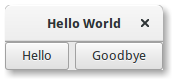
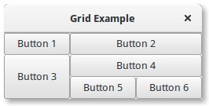
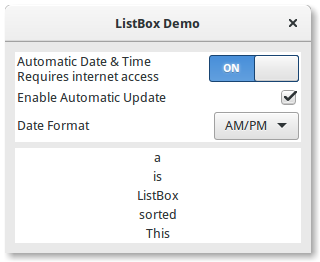
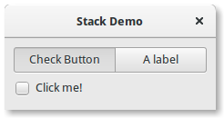
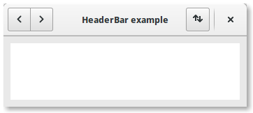
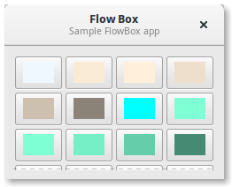
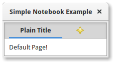

5. Containers de Layout¶
Enquanto muitos toolkits GUI exigem que você coloque precisamente widgets em uma janela, usando posicionamento absoluto, o GTK+ usa uma abordagem diferente. Em vez de especificar a posição e o tamanho de cada widget na janela, você pode organizar seus widgets em linhas, colunas e/ou tabelas. O tamanho da sua janela pode ser determinado automaticamente, com base nos tamanhos dos widgets que ela contém. E os tamanhos dos widgets, por sua vez, são determinados pela quantidade de texto que eles contêm, ou os tamanhos mínimo e máximo que você especifica, e/ou como você solicitou que o espaço disponível seja compartilhado entre conjuntos de widgets. Você pode aperfeiçoar seu layout especificando a distância de preenchimento e os valores de centralização para cada um de seus widgets. O GTK+ usa todas essas informações para redimensionar e reposicionar tudo de maneira sensata e suave quando o usuário manipula a janela.
O GTK+ organiza widgets hierarquicamente, usando containers. Eles são invisíveis para o usuário final e são inseridos em uma janela ou colocados entre si para os componentes do layout. Existem dois tipos de contêineres: contêineres filho único, todos descendentes de Gtk.Bin e contêineres com vários filhos, que são descendentes de Gtk.Container. Os mais usados são caixas verticais ou horizontais (Gtk.Box) e grades (Gtk.Grid).
5.1. Boxes¶
Caixas são contêineres invisíveis nos quais podemos empacotar nossos widgets. Ao agrupar widgets em uma caixa horizontal, os objetos são inseridos horizontalmente da esquerda para a direita ou da direita para a esquerda, dependendo se Gtk.Box.pack_start() ou Gtk.Box.pack_end() for usado. Em uma caixa vertical, os widgets são empacotados de cima para baixo ou vice-versa. Você pode usar qualquer combinação de caixas dentro ou ao lado de outras caixas para criar o efeito desejado.
5.1.1. Exemplo¶
Vamos dar uma olhada em uma versão ligeiramente modificada do exemplo estendido com dois botões.
1 2 3 4 5 6 7 8 9 10 11 12 13 14 15 16 17 18 19 20 21 22 23 24 25 26 27 28 29 30 | import gi
gi.require_version('Gtk', '3.0')
from gi.repository import Gtk
class MyWindow(Gtk.Window):
def __init__(self):
Gtk.Window.__init__(self, title="Hello World")
self.box = Gtk.Box(spacing=6)
self.add(self.box)
self.button1 = Gtk.Button(label="Hello")
self.button1.connect("clicked", self.on_button1_clicked)
self.box.pack_start(self.button1, True, True, 0)
self.button2 = Gtk.Button(label="Goodbye")
self.button2.connect("clicked", self.on_button2_clicked)
self.box.pack_start(self.button2, True, True, 0)
def on_button1_clicked(self, widget):
print("Hello")
def on_button2_clicked(self, widget):
print("Goodbye")
win = MyWindow()
win.connect("destroy", Gtk.main_quit)
win.show_all()
Gtk.main()
|
Primeiro, criamos um contêiner de caixa orientado horizontalmente, onde 6 pixels são colocados entre os filhos. Esta caixa se torna o filho da janela de nível superior.
self.box = Gtk.Box(spacing=6)
self.add(self.box)
Posteriormente, adicionamos dois botões diferentes ao contêiner da caixa.
self.button1 = Gtk.Button(label="Hello")
self.button1.connect("clicked", self.on_button1_clicked)
self.box.pack_start(self.button1, True, True, 0)
self.button2 = Gtk.Button(label="Goodbye")
self.button2.connect("clicked", self.on_button2_clicked)
self.box.pack_start(self.button2, True, True, 0)
Enquanto com os widgets Gtk.Box.pack_start() estão posicionados da esquerda para a direita, Gtk.Box.pack_end() os posiciona da direita para a esquerda.
5.2. Grid¶
Gtk.Grid é um contêiner que organiza seus widgets filhos em linhas e colunas, mas você não precisa especificar as dimensões no construtor. As crianças são adicionadas usando Gtk.Grid.attach(). Eles podem abranger várias linhas ou colunas. O método Gtk.Grid.attach() usa cinco parâmetros:
- O parâmetro
childé oGtk.Widgetpara adicionar. - `` left`` é o número da coluna para anexar o lado esquerdo de
childem. - `` top`` indica o número da linha para anexar o lado superior do
child. - `` width`` e
heightindicam o número de colunas que ochildirá abranger, e o número de linhas que ochildirá abranger, respectivamente.
Também é possível adicionar um child ao lado de um child existente, usando Gtk.Grid.attach_next_to(), que também usa cinco parâmetros:
childé oGtk.Widgetpara adicionar, como acima.siblingé um widget filho existente deself(uma instânciaGtk.Grid) ouNone. O widgetchildserá colocado próximo aosibling, ou sesiblingforNone, no início ou no final da grade.sideé umGtk.PositionTypeindicando o lado dosiblingquechildé posicionado ao lado de.widtheheightindicam o número de colunas e linhas que o widgetchildabrangerá, respectivamente.
Finalmente, Gtk.Grid pode ser usado como Gtk.Box usando apenas Gtk.Grid.add(), que colocará as crianças uma ao lado da outra na direção determinada por a propriedade “orientação” (o padrão é Gtk.Orientation.HORIZONTAL).
5.2.1. Exemplo¶
1 2 3 4 5 6 7 8 9 10 11 12 13 14 15 16 17 18 19 20 21 22 23 24 25 26 27 28 29 30 | import gi
gi.require_version('Gtk', '3.0')
from gi.repository import Gtk
class GridWindow(Gtk.Window):
def __init__(self):
Gtk.Window.__init__(self, title="Grid Example")
grid = Gtk.Grid()
self.add(grid)
button1 = Gtk.Button(label="Button 1")
button2 = Gtk.Button(label="Button 2")
button3 = Gtk.Button(label="Button 3")
button4 = Gtk.Button(label="Button 4")
button5 = Gtk.Button(label="Button 5")
button6 = Gtk.Button(label="Button 6")
grid.add(button1)
grid.attach(button2, 1, 0, 2, 1)
grid.attach_next_to(button3, button1, Gtk.PositionType.BOTTOM, 1, 2)
grid.attach_next_to(button4, button3, Gtk.PositionType.RIGHT, 2, 1)
grid.attach(button5, 1, 2, 1, 1)
grid.attach_next_to(button6, button5, Gtk.PositionType.RIGHT, 1, 1)
win = GridWindow()
win.connect("destroy", Gtk.main_quit)
win.show_all()
Gtk.main()
|
5.3. ListBox¶
A Gtk.ListBox é um contêiner vertical que contém Gtk.ListBoxRow filhos. Essas linhas podem ser classificadas e filtradas dinamicamente e os cabeçalhos podem ser adicionados dinamicamente, dependendo do conteúdo da linha. Também permite navegação e seleção de teclado e mouse como uma lista típica.
Usar Gtk.ListBox é muitas vezes uma alternativa para Gtk.TreeView, especialmente quando o conteúdo da lista tem um layout mais complicado do que o permitido por um Gtk.CellRenderer, ou quando o conteúdo é interativo (ou seja, tem um botão).
Embora um Gtk.ListBox deva ter apenas Gtk.ListBoxRow filhos, você pode adicionar qualquer tipo de widget a ele via Gtk.Container.add() e um Gtk.ListBoxRow widget será automaticamente inserido entre a lista e o widget.
5.3.1. Exemplo¶
1 2 3 4 5 6 7 8 9 10 11 12 13 14 15 16 17 18 19 20 21 22 23 24 25 26 27 28 29 30 31 32 33 34 35 36 37 38 39 40 41 42 43 44 45 46 47 48 49 50 51 52 53 54 55 56 57 58 59 60 61 62 63 64 65 66 67 68 69 70 71 72 73 74 75 76 77 78 79 80 81 82 83 84 85 86 | import gi
gi.require_version('Gtk', '3.0')
from gi.repository import Gtk
class ListBoxRowWithData(Gtk.ListBoxRow):
def __init__(self, data):
super(Gtk.ListBoxRow, self).__init__()
self.data = data
self.add(Gtk.Label(data))
class ListBoxWindow(Gtk.Window):
def __init__(self):
Gtk.Window.__init__(self, title="ListBox Demo")
self.set_border_width(10)
box_outer = Gtk.Box(orientation=Gtk.Orientation.VERTICAL, spacing=6)
self.add(box_outer)
listbox = Gtk.ListBox()
listbox.set_selection_mode(Gtk.SelectionMode.NONE)
box_outer.pack_start(listbox, True, True, 0)
row = Gtk.ListBoxRow()
hbox = Gtk.Box(orientation=Gtk.Orientation.HORIZONTAL, spacing=50)
row.add(hbox)
vbox = Gtk.Box(orientation=Gtk.Orientation.VERTICAL)
hbox.pack_start(vbox, True, True, 0)
label1 = Gtk.Label("Automatic Date & Time", xalign=0)
label2 = Gtk.Label("Requires internet access", xalign=0)
vbox.pack_start(label1, True, True, 0)
vbox.pack_start(label2, True, True, 0)
switch = Gtk.Switch()
switch.props.valign = Gtk.Align.CENTER
hbox.pack_start(switch, False, True, 0)
listbox.add(row)
row = Gtk.ListBoxRow()
hbox = Gtk.Box(orientation=Gtk.Orientation.HORIZONTAL, spacing=50)
row.add(hbox)
label = Gtk.Label("Enable Automatic Update", xalign=0)
check = Gtk.CheckButton()
hbox.pack_start(label, True, True, 0)
hbox.pack_start(check, False, True, 0)
listbox.add(row)
row = Gtk.ListBoxRow()
hbox = Gtk.Box(orientation=Gtk.Orientation.HORIZONTAL, spacing=50)
row.add(hbox)
label = Gtk.Label("Date Format", xalign=0)
combo = Gtk.ComboBoxText()
combo.insert(0, "0", "24-hour")
combo.insert(1, "1", "AM/PM")
hbox.pack_start(label, True, True, 0)
hbox.pack_start(combo, False, True, 0)
listbox.add(row)
listbox_2 = Gtk.ListBox()
items = 'This is a sorted ListBox Fail'.split()
for item in items:
listbox_2.add(ListBoxRowWithData(item))
def sort_func(row_1, row_2, data, notify_destroy):
return row_1.data.lower() > row_2.data.lower()
def filter_func(row, data, notify_destroy):
return False if row.data == 'Fail' else True
listbox_2.set_sort_func(sort_func, None, False)
listbox_2.set_filter_func(filter_func, None, False)
listbox_2.connect('row-activated', lambda widget, row: print(row.data))
box_outer.pack_start(listbox_2, True, True, 0)
listbox_2.show_all()
win = ListBoxWindow()
win.connect("destroy", Gtk.main_quit)
win.show_all()
Gtk.main()
|
5.4. Stack and StackSwitcher¶
A Gtk.Stack é um contêiner que mostra apenas um de seus filhos por vez. Em contraste com Gtk.Notebook, Gtk.Stack não fornece um meio para os usuários alterarem o filho visível. Em vez disso, o widget Gtk.StackSwitcher pode ser usado com Gtk.Stack para fornecer essa funcionalidade.
Transições entre páginas podem ser animadas como slides ou fades. Isso pode ser controlado com Gtk.Stack.set_transition_type(). Essas animações respeitam a configuração “gtk-enable-animations”.
A velocidade de transição pode ser ajustada com Gtk.Stack.set_transition_duration()
O widget Gtk.StackSwitcher atua como um controlador para um Gtk.Stack; Ele mostra uma linha de botões para alternar entre as várias páginas do widget de pilha associado.
Todo o conteúdo para os botões vem das propriedades filho do Gtk.Stack.
É possível associar múltiplos widgets Gtk.StackSwitcher com o mesmo widget Gtk.Stack.
5.4.1. Exemplo¶
1 2 3 4 5 6 7 8 9 10 11 12 13 14 15 16 17 18 19 20 21 22 23 24 25 26 27 28 29 30 31 32 33 | import gi
gi.require_version('Gtk', '3.0')
from gi.repository import Gtk
class StackWindow(Gtk.Window):
def __init__(self):
Gtk.Window.__init__(self, title="Stack Demo")
self.set_border_width(10)
vbox = Gtk.Box(orientation=Gtk.Orientation.VERTICAL, spacing=6)
self.add(vbox)
stack = Gtk.Stack()
stack.set_transition_type(Gtk.StackTransitionType.SLIDE_LEFT_RIGHT)
stack.set_transition_duration(1000)
checkbutton = Gtk.CheckButton("Click me!")
stack.add_titled(checkbutton, "check", "Check Button")
label = Gtk.Label()
label.set_markup("<big>A fancy label</big>")
stack.add_titled(label, "label", "A label")
stack_switcher = Gtk.StackSwitcher()
stack_switcher.set_stack(stack)
vbox.pack_start(stack_switcher, True, True, 0)
vbox.pack_start(stack, True, True, 0)
win = StackWindow()
win.connect("destroy", Gtk.main_quit)
win.show_all()
Gtk.main()
|
5.5. HeaderBar¶
A Gtk.HeaderBar é semelhante a uma horizontal Gtk.Box, permite colocar filhos no início ou no final. Além disso, permite que um título seja exibido. O título será centrado em relação à largura da caixa, mesmo que os filhos de ambos os lados ocupem diferentes quantidades de espaço.
Como o GTK+ agora suporta o Client Side Decoration, um Gtk.HeaderBar pode ser usado no lugar da barra de título (que é renderizada pelo Gerenciador de Janelas).
A Gtk.HeaderBar geralmente está localizado na parte superior de uma janela e deve conter controles comumente usados que afetam o conteúdo abaixo. Eles também fornecem acesso a controles de janela, incluindo o botão de fechar janela e o menu de janela.
5.5.1. Exemplo¶
1 2 3 4 5 6 7 8 9 10 11 12 13 14 15 16 17 18 19 20 21 22 23 24 25 26 27 28 29 30 31 32 33 34 35 36 37 38 39 40 41 | import gi
gi.require_version('Gtk', '3.0')
from gi.repository import Gtk, Gio
class HeaderBarWindow(Gtk.Window):
def __init__(self):
Gtk.Window.__init__(self, title="HeaderBar Demo")
self.set_border_width(10)
self.set_default_size(400, 200)
hb = Gtk.HeaderBar()
hb.set_show_close_button(True)
hb.props.title = "HeaderBar example"
self.set_titlebar(hb)
button = Gtk.Button()
icon = Gio.ThemedIcon(name="mail-send-receive-symbolic")
image = Gtk.Image.new_from_gicon(icon, Gtk.IconSize.BUTTON)
button.add(image)
hb.pack_end(button)
box = Gtk.Box(orientation=Gtk.Orientation.HORIZONTAL)
Gtk.StyleContext.add_class(box.get_style_context(), "linked")
button = Gtk.Button()
button.add(Gtk.Arrow(Gtk.ArrowType.LEFT, Gtk.ShadowType.NONE))
box.add(button)
button = Gtk.Button()
button.add(Gtk.Arrow(Gtk.ArrowType.RIGHT, Gtk.ShadowType.NONE))
box.add(button)
hb.pack_start(box)
self.add(Gtk.TextView())
win = HeaderBarWindow()
win.connect("destroy", Gtk.main_quit)
win.show_all()
Gtk.main()
|
5.6. FlowBox¶
A Gtk.FlowBox é um contêiner que posiciona widgets filhos em sequência de acordo com sua orientação.
Por exemplo, com a orientação horizontal, os widgets serão organizados da esquerda para a direita, iniciando uma nova linha na linha anterior, quando necessário. Reduzir a largura neste caso exigirá mais linhas, portanto, uma altura maior será solicitada.
Da mesma forma, com a orientação vertical, os widgets serão organizados de cima para baixo, iniciando uma nova coluna à direita quando necessário. Reduzir a altura exigirá mais colunas, portanto será solicitada uma largura maior.
Os filhos de uma Gtk.FlowBox podem ser classificados e filtrados dinamicamente.
Embora um Gtk.FlowBox deva ter apenas Gtk.FlowBoxChild filhos, você pode adicionar qualquer tipo de widget a ele via Gtk.Container.add(), e a Gtk.FlowBoxChild, o widget será automaticamente inserido entre a caixa e o widget.
5.6.1. Exemplo¶
1 2 3 4 5 6 7 8 9 10 11 12 13 14 15 16 17 18 19 20 21 22 23 24 25 26 27 28 29 30 31 32 33 34 35 36 37 38 39 40 41 42 43 44 45 46 47 48 49 50 51 52 53 54 55 56 57 58 59 60 61 62 63 64 65 66 67 68 69 70 71 72 73 74 75 76 77 78 79 80 81 82 83 84 85 86 87 88 89 90 91 92 93 94 95 96 97 98 99 100 101 102 103 104 105 106 107 108 109 110 111 112 113 114 115 116 117 118 119 120 | import gi
gi.require_version('Gtk', '3.0')
from gi.repository import Gtk, Gdk
class FlowBoxWindow(Gtk.Window):
def __init__(self):
Gtk.Window.__init__(self, title="FlowBox Demo")
self.set_border_width(10)
self.set_default_size(300, 250)
header = Gtk.HeaderBar(title="Flow Box")
header.set_subtitle("Sample FlowBox app")
header.props.show_close_button = True
self.set_titlebar(header)
scrolled = Gtk.ScrolledWindow()
scrolled.set_policy(Gtk.PolicyType.NEVER, Gtk.PolicyType.AUTOMATIC)
flowbox = Gtk.FlowBox()
flowbox.set_valign(Gtk.Align.START)
flowbox.set_max_children_per_line(30)
flowbox.set_selection_mode(Gtk.SelectionMode.NONE)
self.create_flowbox(flowbox)
scrolled.add(flowbox)
self.add(scrolled)
self.show_all()
def color_swatch_new(self, str_color):
color = Gdk.color_parse(str_color)
rgba = Gdk.RGBA.from_color(color)
button = Gtk.Button()
area = Gtk.DrawingArea()
area.set_size_request(24, 24)
area.override_background_color(0, rgba)
button.add(area)
return button
def create_flowbox(self, flowbox):
colors = [
'AliceBlue',
'AntiqueWhite',
'AntiqueWhite1',
'AntiqueWhite2',
'AntiqueWhite3',
'AntiqueWhite4',
'aqua',
'aquamarine',
'aquamarine1',
'aquamarine2',
'aquamarine3',
'aquamarine4',
'azure',
'azure1',
'azure2',
'azure3',
'azure4',
'beige',
'bisque',
'bisque1',
'bisque2',
'bisque3',
'bisque4',
'black',
'BlanchedAlmond',
'blue',
'blue1',
'blue2',
'blue3',
'blue4',
'BlueViolet',
'brown',
'brown1',
'brown2',
'brown3',
'brown4',
'burlywood',
'burlywood1',
'burlywood2',
'burlywood3',
'burlywood4',
'CadetBlue',
'CadetBlue1',
'CadetBlue2',
'CadetBlue3',
'CadetBlue4',
'chartreuse',
'chartreuse1',
'chartreuse2',
'chartreuse3',
'chartreuse4',
'chocolate',
'chocolate1',
'chocolate2',
'chocolate3',
'chocolate4',
'coral',
'coral1',
'coral2',
'coral3',
'coral4'
]
for color in colors:
button = self.color_swatch_new(color)
flowbox.add(button)
win = FlowBoxWindow()
win.connect("destroy", Gtk.main_quit)
win.show_all()
Gtk.main()
|
5.7. Notebook¶
O widget Gtk.Notebook é um Gtk.Container cujos filhos são páginas que podem ser alternadas usando rótulos de guias ao longo de uma borda.
Existem muitas opções de configuração para o GtkNotebook. Entre outras coisas, você pode escolher em qual borda as abas aparecem (veja Gtk.Notebook.set_tab_pos()), se houver muitas abas para caber no notebook, elas devem ser maiores ou setas de rolagem serão adicionadas (veja Gtk.Notebook.set_scrollable(), e se haverá um menu pop-up que permita aos usuários trocar de página (veja Gtk.Notebook.popup_enable(), Gtk.Notebook.popup_disable()).
5.7.1. Exemplo¶
1 2 3 4 5 6 7 8 9 10 11 12 13 14 15 16 17 18 19 20 21 22 23 24 25 26 27 28 29 30 31 32 33 | import gi
gi.require_version('Gtk', '3.0')
from gi.repository import Gtk
class MyWindow(Gtk.Window):
def __init__(self):
Gtk.Window.__init__(self, title="Simple Notebook Example")
self.set_border_width(3)
self.notebook = Gtk.Notebook()
self.add(self.notebook)
self.page1 = Gtk.Box()
self.page1.set_border_width(10)
self.page1.add(Gtk.Label('Default Page!'))
self.notebook.append_page(self.page1, Gtk.Label('Plain Title'))
self.page2 = Gtk.Box()
self.page2.set_border_width(10)
self.page2.add(Gtk.Label('A page with an image for a Title.'))
self.notebook.append_page(
self.page2,
Gtk.Image.new_from_icon_name(
"help-about",
Gtk.IconSize.MENU
)
)
win = MyWindow()
win.connect("destroy", Gtk.main_quit)
win.show_all()
Gtk.main()
|